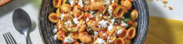

Quick Prawn and Tomato Pasta

Ingredients
Method
-
Bring a large saucepan of salted water to the boil. • Cook orecchiette in the boiling water until ‘al dente’, 8
minutes. • Drain and return to pan. TIP: 'Al dente' pasta is cooked through but still slightly firm in the centre.
- While pasta is cooking, roughly chop tomato. • Thinly slice zucchini into rounds. • Finely chop garlic.
-
In a large frying pan, heat a drizzle of olive oil over a medium-high heat with a drizzle of olive oil. • Cook
zucchini until softened, 3-4 minutes. Add garlic and tomato and cook until fragrant, 1-2 minutes. • Add garlic &
herb seasoning, Nan's special seasoning, passata, the water and peeled prawns. Cook, stirring, until sauce is
thickened and prawns are pink and starting to curl up, 3-4 minutes. • Add butter, baby spinach leaves and drained
orechiette. Stir until spinach is wilted. Season to taste.
-
Divide prawn and tomato orecchiette with zucchini between bowls. • Top with crumbled fetta cubes. • Sprinkle with
flaked almonds to serve.